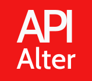

<div class="container-fluid">
  <div class="row">
    <div class="col-md-4 order-last">
      <div class="about">
        
        <div class="about-app" >
          <p class="mb-0"> <strong>Alter-API</strong>  is an application where you can test your API. </p>
          <p class="mt-0" >
            Quickly and easily requests directly within Alter-API.
            Automate manual tests and Communicate the expected behavior of an API by simulating endpoints.
          </p>
          <hr>
          <div>
            <strong>Near future plans &#x2708; </strong>
            <p>I want to add some features to application which will make it much more reliable and approachable to all.</p>
            <ul>
              <li>Implimenting user authentication system. </li>
              <li>Give user to make collection of similar API's and save API, responses and can make API documentation. </li>
              <li>Convert it into an Extension.</li>
            </ul>
          </div>
          <hr>
          <div>
            <strong>Inspiration &#x2B50; </strong>
            <p>
              When ever  I'm working with API's , I always use <a href="https://www.postman.com" target="_blank">Postman</a> . <br>
              So I thought to make my own API testing app. This application might not be good as Postman but by building these types of app
              I learn a lot. <br>
              So  why not try it ! &#x270C;
            </p>
            <a href="https://github.com/deeps8/ai-voice-assisted-todo-app" target="_blank" > <strong>Github repo</strong> </a>
          </div>
        </div>
      </div>

    </div>
    <div class="col-md-8 order-first">
      <router-outlet></router-outlet>
    </div>
  </div>

</div>
